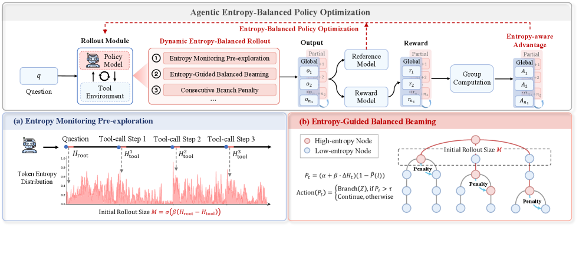

TL;DR
两部分：dynamic entropy-balanced rollout，预监测 entropy 后分配全局/分支采样预算，并对连续高熵 tool-call step 施加 branch penalty；Entropy-Balanced Policy Optimization，在高熵 clipping 项加入 stop-gradient，并用 entropy-aware advantage 重点学习高不确定 token。 14 个挑战数据集上超过 7 个主流 RL 算法。仅 1K RL samples，Qwen3-14B + AEBPO 在 GAIA pass@1 47.6%、HLE 11.2%、WebWalker 43.0%；pass@5 分别 65.0%、26.0%、70.0%。它虽不只限 GUI，但被综述用于解释 web/GUI agent rollout entropy collapse。
⚠️ 数值主要按论文/技术报告/综述自报口径整理，未声明为第三方独立复现。
0. 论文定位卡
| 路线 | Offline RL |
|---|---|
| 环境 | Cross-platform GUI |
| 动作空间 | 统一 GUI action schema |
| 奖励信号 | 离线轨迹回报、偏好对、Q value 或规则标签 |
| 优化方式 | model-based RL / synthetic rollout |
| 读表口径 | ⚠️ 数值主要按论文/技术报告/综述自报口径整理，未声明为第三方独立复现。 |
先看这张卡可以避免误读：GUI Agent RL 论文经常把“模型能力”“环境系统”“奖励设计”“数据生成”混在一起讨论。这里把它拆成环境、动作空间、奖励信号和优化方式四个轴，方便判断论文到底贡献在哪里。
1. 框架图与读图指南

读图顺序
- 先看输入端：当前 GUI 视觉状态、任务指令和必要的历史上下文。
- 再看中间模块：把样本转成偏好对、Q-learning transition、规则奖励标签或 offline GRPO group。
- 接着看反馈回路：由终局完成、过程进展、动作合法性、坐标定位或 verifier 判断组成，这一项如何回到策略、价值函数、reward model 或数据筛选器。
- 最后看输出端：统一 GUI action schema，包括 click/type/scroll/swipe/back/finish 或工具调用；这决定论文结果到底是在单步 grounding、完整 trajectory 还是系统吞吐上成立。
读这类图不要只看模块名，要沿着 observation → action → reward/update 的方向追踪数据流。只要能指出 reward 或 verifier 是在哪里产生的、又如何回到策略更新，就基本抓住了论文的核心。
2. 要解决的问题
Web agent 的长时序工具调用需要探索，但过度依赖 entropy 会导致 rollout 分支失控和训练崩塌。
换成 GUI agent 的语言，这个问题通常落在三件事上：界面状态部分可观测、正确反馈稀疏且延迟、静态示范无法覆盖真实软件变化。论文的价值就在于把这些问题中的一个或多个转成可训练的闭环信号。
如果只用 SFT 或行为克隆，模型学到的是“在数据集截图上下一步该怎么点”；而 GUI Agent 真正部署时会遇到状态漂移、异步加载、误点回退、任务参数变化和界面版本变化。本文所属路线试图回答的是：如何让模型从环境反馈、可验证标签或合成轨迹里继续改进，而不是停留在一次性模仿。
3. 任务形式：输入、动作、奖励
| 观察 | 当前 GUI 视觉状态、任务指令和必要的历史上下文。 |
|---|---|
| 动作 | 统一 GUI action schema，包括 click/type/scroll/swipe/back/finish 或工具调用。 |
| 奖励 | 由终局完成、过程进展、动作合法性、坐标定位或 verifier 判断组成。 |
这个表是读 GUI Agent RL 论文最重要的入口：只要弄清楚模型看到了什么、能做什么、奖励从哪里来，就能判断它是算法贡献、环境贡献、奖励贡献还是系统贡献。
4. 训练闭环怎么跑
- 从示范轨迹、失败轨迹、候选动作或静态 benchmark 中构造可训练样本。
- 把样本转成偏好对、Q-learning transition、规则奖励标签或 offline GRPO group。
- 训练策略、value/Q head 或 reranker，使模型在不访问环境时也能区分好坏动作。
- 推理时用训练后的策略直接行动，或生成多个候选后由 value/reward 模型重排。
这条闭环是理解论文的主线。无论它叫 GRPO、DPO、AEPO、MCTS、world model 还是 semi-online，最终都要把“模型输出的动作”转换成“可执行状态变化”，再把状态变化转换成“可训练信号”。
5. 方法与架构怎么跑
- 多轮网页/工具 agent 早期需要探索，后期需要稳定执行。普通 entropy bonus 要么让模型一直乱试，要么训练后期过早塌缩到少数动作。
- 它先监测不同步骤的 entropy，把采样预算分给更需要探索的分支；对于连续高熵 tool-call step 加 branch penalty，避免分支数量爆炸。
- 训练目标中加入 entropy-aware advantage 和高熵 clipping 设计，让模型重点学习高不确定但有价值的 token。
5.1 问题：agent RL 中的 entropy collapse 和分支爆炸
多轮网页/工具 agent 早期需要探索，后期需要稳定执行。普通 entropy bonus 要么让模型一直乱试，要么训练后期过早塌缩到少数动作。
AEBPO 关注的是如何平衡探索和收敛，尤其是长时序 tool-call / web agent 场景。
5.2 Dynamic entropy-balanced rollout
它先监测不同步骤的 entropy，把采样预算分给更需要探索的分支；对于连续高熵 tool-call step 加 branch penalty，避免分支数量爆炸。
这让 rollout 既覆盖不确定决策点，又不被无效探索拖垮。
5.3 Entropy-aware policy optimization
训练目标中加入 entropy-aware advantage 和高熵 clipping 设计，让模型重点学习高不确定但有价值的 token。
虽然它不是纯 GUI 论文，但对 Web/GUI agent 很重要，因为环境动作分支和工具调用都会放大探索问题。
因此，这篇论文不是简单地“让大模型点屏幕”，而是围绕 observation-action-reward 契约重写训练闭环：先让动作可执行，再让反馈可验证，最后让策略能从成功和失败中更新。
5.4 关键中间变量
读方法时要特别盯住中间变量：轨迹是按 step 存、按 episode 存，还是按候选动作组存？奖励是只在终局出现，还是每一步都有 progress？模型更新时用的是整条轨迹的相对优势、单步坐标误差、偏好对，还是 value/Q head？这些细节决定了论文能否处理长任务和稀疏奖励。
5.5 为什么这种设计能解决原问题
核心逻辑是把原本不可微、不可直接监督的 GUI 成功条件拆成更接近训练信号的形式：要么用规则/verifier 把成功自动判出来，要么用 reward model 学过程进展，要么用世界模型/搜索生成更多成功轨迹，要么用层级结构把几十步任务拆成几个短子目标。
6. 训练、奖励与数据流
- 离线阶段先从静态轨迹、成功/失败对或规则可验证样本中学习，优点是便宜、安全、可复现。
- 优化通常用 DPO、offline GRPO、Q-learning、IQL/CQL 或 value reranking，重点是避免策略偏离数据分布后无人纠正。
读实验时要特别注意 reward 口径：有的论文评估单步坐标，有的评估整条任务成功，有的只报告系统吞吐或数据合成质量。不同口径不能直接相加或横向混算。
7. 关键设计与创新点
- 在不访问真实环境的前提下利用轨迹、偏好或 value signal，降低安全风险和交互成本。
这些创新点的共同目标，是把 GUI 交互从一次性 prompt 调用变成可迭代优化的训练系统。
8. 实验怎么读
14 个挑战数据集上超过 7 个主流 RL 算法。仅 1K RL samples，Qwen3-14B + AEBPO 在 GAIA pass@1 47.6%、HLE 11.2%、WebWalker 43.0%；pass@5 分别 65.0%、26.0%、70.0%。它虽不只限 GUI，但被综述用于解释 web/GUI agent rollout entropy collapse。
| 项目 | 口径 | 指标 | 结论/注意事项 |
|---|---|---|---|
| 主 benchmark | 论文/综述列出的 GUI benchmark | 任务成功率 / grounding accuracy / 系统吞吐 | 14 个挑战数据集上超过 7 个主流 RL 算法。仅 1K RL samples，Qwen3-14B + AEBPO 在 GAIA pass@1 47.6%、HLE 11.2%、WebWalker 43.0%；pass@5 分别 65.0%、26.0%、70.0%。它虽不只限 GUI，但被综述用于解释 web/GUI agent rollout entropy collapse。 |
| 对照基线 | SFT、BC、prompting、闭源 VLM 或同尺寸开源模型 | 相同任务口径下比较 | 不同论文的环境和任务集合不同，不能把数值直接跨表相加。 |
| 可信度 | 作者自评或综述转述 | ⚠️ / 待核 | ⚠️ 数值主要按论文/技术报告/综述自报口径整理，未声明为第三方独立复现。 |
这类实验通常需要同时看三组数字：第一是任务成功率或 grounding accuracy；第二是与 SFT、BC、prompting、GPT-4V/闭源模型或开源基线的对比；第三是环境成本，例如 rollout 速度、样本数量、标注成本和并行规模。
尤其要避免一个常见误读：ScreenSpot/grounding accuracy、WebArena success rate、AndroidWorld task success、OSWorld desktop success、world-model rollout speed 不是同一个指标。本文页面保留原论文或综述的原始口径，不把它们强行换算。
9. 常见误读
- 不要把离线结果理解成“无需环境即可解决真实交互”；离线训练仍受轨迹覆盖和 OOD 状态限制。
- 读 AEBPO: Agentic Entropy-Balanced Policy Optimization 时，应先确认它报告的是作者自评、技术报告结果还是第三方 benchmark 结果。
10. 复现或落地时要准备什么
- 先固定 action schema，并写一个能把模型输出解析成真实 GUI 操作的 adapter。
- 准备 verifier：至少要能判断终局成功；如果是 grounding 论文，还要能计算坐标/区域奖励。
- 离线训练要检查轨迹覆盖和负样本质量，避免模型学到只在数据集状态里有效的捷径。
如果只能先复现一小部分，建议优先复现 action schema、verifier 和一组可重置任务；没有这三件事，后续 RL 指标很难可信。
11. 局限与读法
- 离线轨迹覆盖不到的状态仍是风险；模型一旦偏离专家路径，可能缺少纠正样本。
它属于安全低成本路线：先尽量从已有轨迹和可验证标签中榨取价值，再决定是否进入在线环境。
和参考站的可信度规则一致，本页把作者自评、技术报告自报和综述转述都按 ⚠️ 处理；只有基准维护方统一评测或第三方复现才适合当作更强证据。
来源
本页依据 GUI Agent RL 综述、论文摘要/公开页面和站内总报告整理；数值优先保留论文自报口径，未做第三方复现实验。参考站体例来自具身智能学习站的论文细读页面，例如 RT-2 与 SimpleVLA-RL 细读。